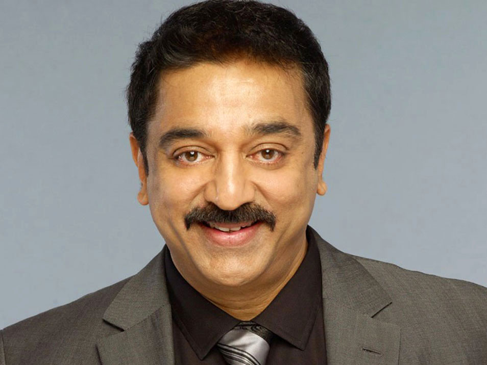
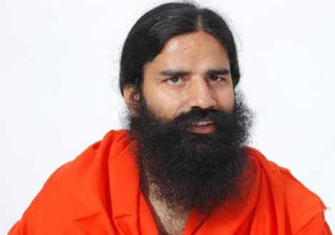
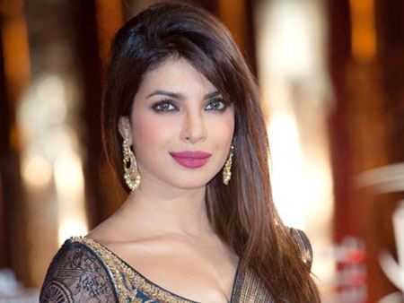
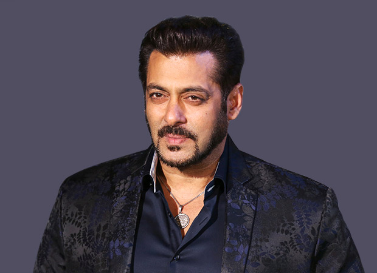
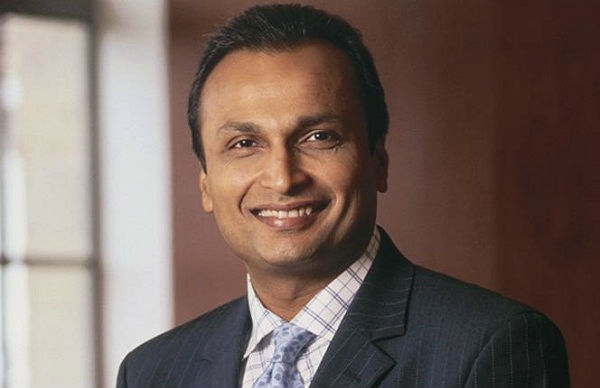
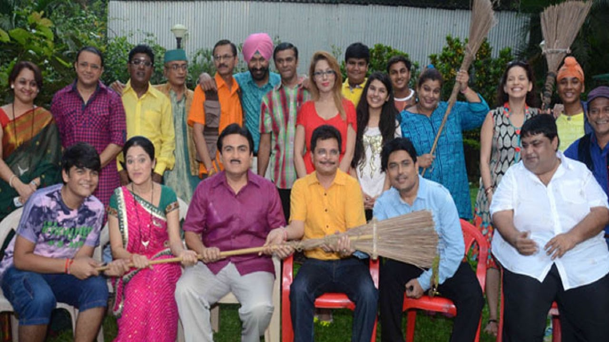

In New Delhi, Prime Minister Narendra Modi invited nine well-known people to join the Swachh Bharat Abhiyan that he launched on 2 October 2014 and requested each of them to draw nine more into the initiative to take it viral. These nine people were:
Goa Governor Mridula Sinha
Sachin Tendulkar
Kamal Hassan
Baba Ramdev
Congress lawmaker and former union minister Shashi Tharoor
Priyanka Chopra
Salman Khan
Anil Ambani

Team of popular TV serial Tarak Mehta Ka Oolta ChashmaAnd so on many others were selected from then onwards, like:
- Shilpa Shetty
- Shah Rukh Khan
- Vidya Balan
- Amitabh Bacchan
- Virat Kohli
- Mahendra Singh Dhoni
- Kapil Sharma
- Sourav Ganguly
- Kiran Bedi
- Padmanabha Acharya
- Akhilesh Yadav
- Swami Rambhadracharya
- Manoj Tiwari
- Mohammad Kaif
- Deviprasad Dwivedi
- Raju Srivastava
- Suresh Rain
- Kailash Kher